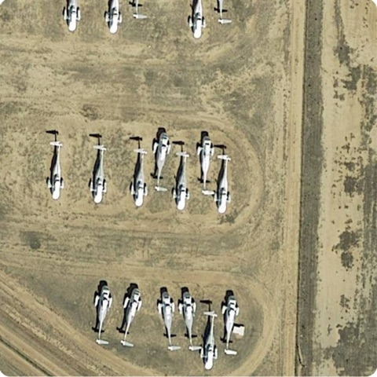
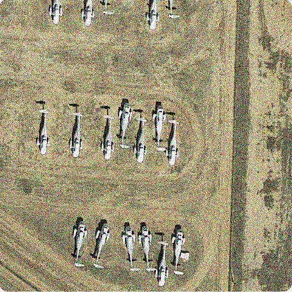
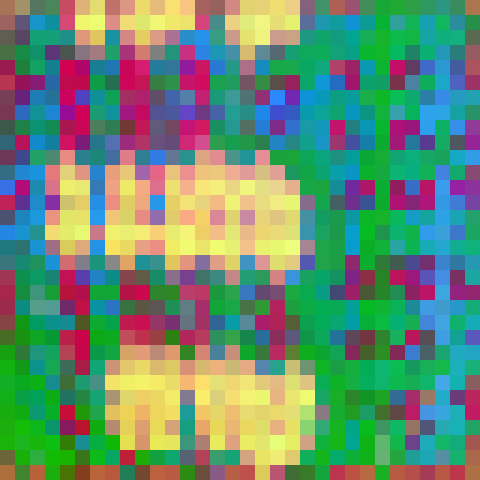
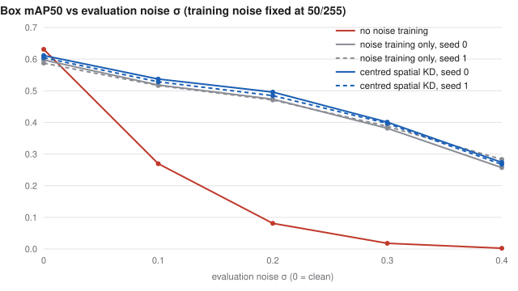

Noise-robust object detection via heterogeneous ViT → CNN distillation
위성 센서 노이즈 속에서도 가벼운 검출기가 동작하게 하는 연구입니다. 배포 모델은 그대로 두고 학습만 바꿨습니다.
Keep a lightweight detector working under satellite sensor noise. YOLOv8s-seg (CNN) is trained with 50:50 clean/noisy batches and, in the final version, a centred spatial distillation loss from DINOv2 (ViT) patch tokens; teacher and adapter are removed at inference, so the deployed model is unchanged (11.8M parameters / 22 MB).
- 0.018 → 0.381 box mAP50 under noise (σ = 0.3) from noise training alone
- +0.020 / +0.010 more from centred spatial distillation (seeds 0 / 1); relational KD added nothing
- −0.034 clean-tile cost of noise training; with spatial distillation −0.020
What I tried
The target is a detector small enough for an on-board computer that still works when the image is noisy. The obvious route — distil a large, robust vision transformer into a small CNN — took five attempts.
The five attempts
| attempt | idea | what happened | why it fell short |
|---|---|---|---|
| 1 · Feature-matching KD | 1×1 adapter, MSE between DINOv2 and YOLO features (small COCO subset) | mAP below the plain detector | adapter too shallow; no detection loss in the objective |
| 2 · Adapter v1 → v9 | residual adapter with GroupNorm, GELU, coordinate attention; MSE + RKD + cosine; PCGrad against gradient clash (COCO 40k) | clean mAP50 0.5423 → 0.5616, but at σ = 0.3 0.4171 → 0.4058 | the distilled backbone fell faster under noise — clean-image knowledge did not transfer to noisy inputs |
| 3 · Clean teacher, noisy student | teacher sees the clean tile, student the noisy one; align their statistics on iSAID | loss converged; no measured robustness gain | matching statistics of noisy features did not make detection robust |
| 4 · RKD + mixed-noise training | distance-wise relational KD between images plus 50:50 clean/noisy training | official split: same as noise training alone (+0.001 / −0.002 over two seeds) | it relates whole images to each other; nothing tells the student where objects are |
| 5 · Centred spatial KD + mixed-noise training (final) | align DINOv2 patch tokens to student features position by position, after removing each image's mean token on both sides | noisy mAP50 +0.020 / +0.010 over noise training alone; gone when teacher positions are shuffled (seed 0) | — (open questions below) |
Results
| model | noisy | clean |
|---|---|---|
| Baseline (no noise training)* | 0.018 | 0.631 |
| + noise training | 0.381 | 0.597 |
| + noise training + relational KD | 0.382 | 0.593 |
| + noise training + centred spatial KD (final) | 0.401 | 0.611 |

What the comparison says
Noise training does most of the work (0.018 → 0.381 noisy mAP50). Relational KD adds nothing on top. Centred spatial KD adds a smaller but repeated gain (+0.020 / +0.010) and also raises clean mAP50. Robustness is not free: noise training costs 0.034 on clean tiles.
Superseded September 2 × 2 (kept for the record)
On the leaky Kaggle split with inflated boxes, the 2 × 2 (with / without distillation × with / without noise training) gave baseline 0.015 / 0.284, distillation only 0.018 / 0.297, noise training 0.178 / 0.225, both 0.182 / 0.231 (noisy / clean), i.e. "+0.163, 97% from noise training, distillation +0.005". The direction — noise training dominates, relational KD adds little — held on the official split; the absolute numbers did not.

Spatial distillation in detail (graduation thesis, 2026.11)
Relational KD relates images to each other. Spatial distillation instead asks whether the teacher can help by teaching where: I aligned DINOv2 patch tokens to student features position by position (cosine distance, teacher tokens with outlier norms masked) and checked each variant against a control in which the teacher's token positions are shuffled per image.



- +0.020 / +0.010 noisy mAP50 over noise training alone with centred alignment (seeds 0 / 1); clean also +0.014 / +0.017
- [+0.015, +0.024] 95% bootstrap interval of that gap on seed 0 (evaluation-sample variation only)
- plain alignment (λ = 0.5) and image-level relational KD: no gain (−0.008; +0.001 / −0.002)
| condition (seed 0) | clean | noisy | noisy, small objects |
|---|---|---|---|
| noise training only (λ = 0) | 0.597 | 0.381 | 0.242 |
| + image-level relational KD | 0.593 | 0.382 | 0.244 |
| + plain alignment, λ = 0.5 | 0.596 | 0.374 | 0.240 |
| same, positions shuffled | 0.591 | 0.384 | 0.245 |
| + centred alignment, λ = 2.5 | 0.611 | 0.401 | 0.253 |
| same, positions shuffled | 0.587 | 0.375 | 0.245 |
| + plain alignment, λ = 2.5 | 0.606 | 0.391 | 0.248 |
In a short diagnostic run, plain alignment pushed student features toward one position-independent direction. Subtracting each image's mean token from teacher and student before the cosine distance (centring) removes that shared component and aligns each position's deviation. It is the only variant that beat both noise training alone and its own shuffled control. Across evaluation noise levels, centred alignment led at σ = 0.1–0.3 on both seeds, and in all six seed × noise-sample combinations at σ = 0.3.

What this does not show yet
Centring and λ changed together; plain alignment at λ = 2.5 landed in between (0.391), so the two effects are not separated. The shuffled controls and that check have one seed each. The main comparison has two training seeds, and at σ = 0.4 the sign flipped on seed 1. The bootstrap resamples patches cut from 458 source images, so the interval is likely too narrow. Only Gaussian noise was tested.
Implementation
Sole author of the ML code: RKD loss, custom Ultralytics trainer (SPPF hook, adapter, mixed noise), three framework-level bug fixes.